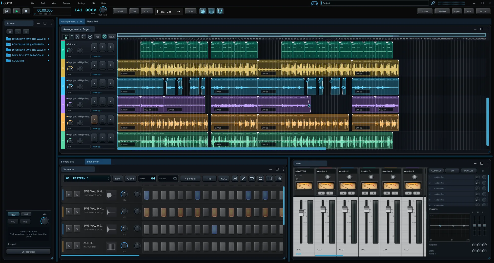
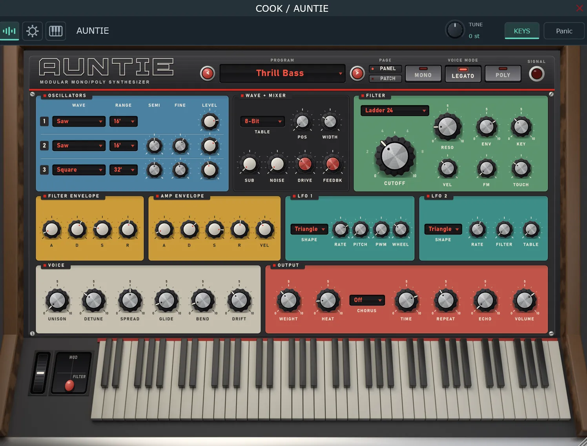
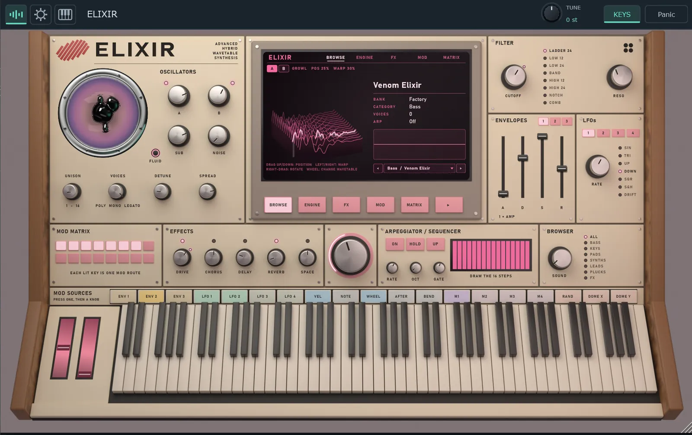
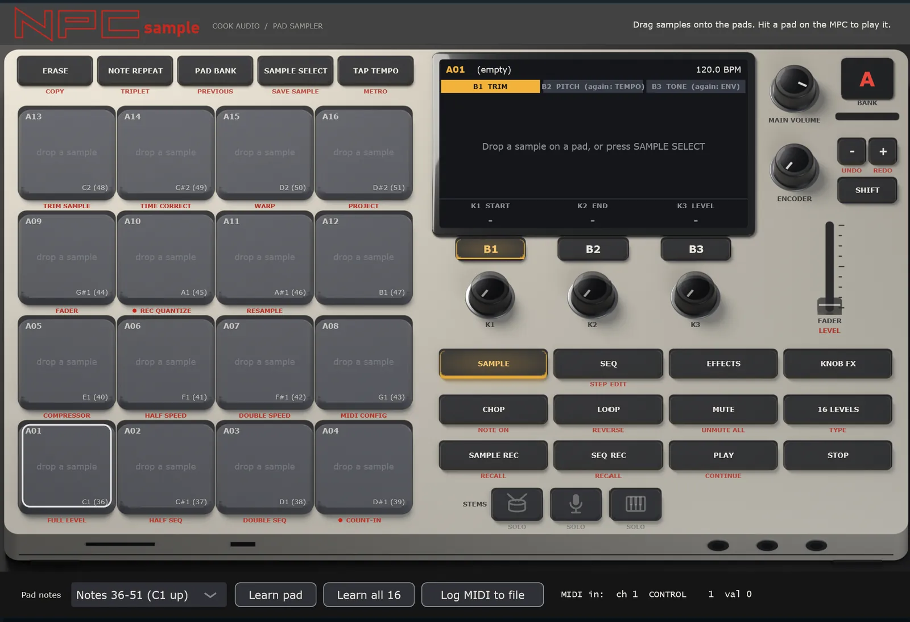
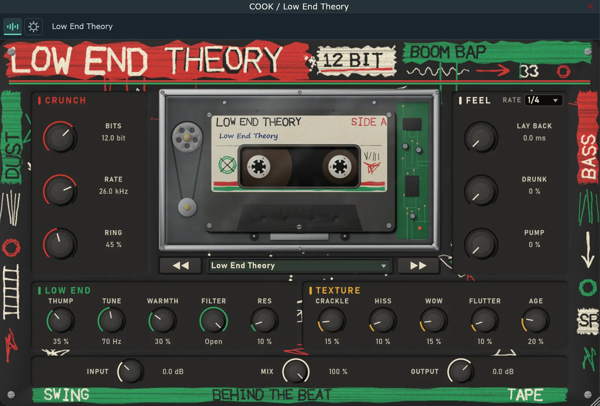
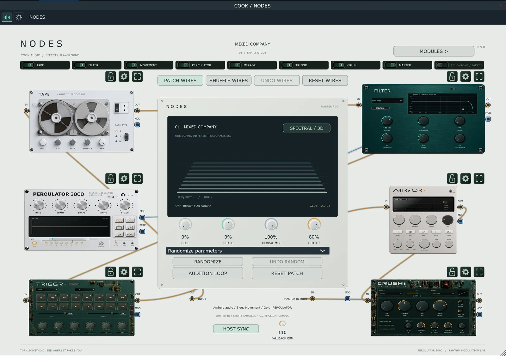

Produce
Make beats. Chop samples, sequence drums, generate chords, and bend notes.


MAKE FIRE.
Dive in. Produce, record, and mix without boundaries.

Black Friday Pay what you want while COOK is in early release.
Beta 0.1.0 · Windows 10 and 11, 64-bit · 363 MB
Make beats. Chop samples, sequence drums, generate chords, and bend notes.
Punch in, stack takes, and comp vocals in a familiar workflow.

Shape your sound with a console mixer and built-in effects.

COOK ships with its own synths and effects built in. Nothing extra to buy, nothing extra to install.
Synths and effects made to do things your other plugins won’t.





The pantry. Essentials you reach for on every track, plus JumpSkip for bending time.
JumpSkip Bend time. Draw half-time drops, stutters, repeats and gated chops across a bar, then stack filter, pan and crush moves on top. It all stays locked to your tempo.
Staples Delay Echoes that sit right. Sync them to your tempo or go free, shape the repeats with feedback and tone, and let ducking keep them out of your vocal’s way.
Staples EQ Six bands and a live analyzer. Carve out the mud, tame the harsh stuff, and add air up top.
Staples Reverb From tight rooms to huge halls. Control the bass and treble tails separately, sync the pre-delay, and duck the wash so vocals stay up front.
Songwriters and producers put 10,000+ hours into mastering their craft, only to hit paywall after paywall from corporations that get to decide who can and can’t create.
COOK has no subscription. During early release it’s pay what you want: download it, make something, and give what feels right.
Pay what you want